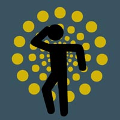

| | username // |
jammin_b
| | real name // |
Benjamin Fisher
| | picture // |

| | blurb // |
I'm an outgoing friendly fella and I've just come back to Australia after two years of overseas travel.
I spent a lot of time in London and travelled western europe from Germany to Portugal. I worked with Kids for a summer camp in the U.S. and have decided to move home and get an education. I don't know if I have any influences to be quite honest, I'm a person who does what I want for my own reasons. There are many things I want to do with my life and I'm just working through them as opportunities arise :)
I'm making a radio program for the Radioworks project. I'm also working at the moment as a storeperson saving up for full time study next year. Work involves getting up early which I totally don't like :) But I love the pay going into my bank account every week.
I'm currently studying Communications and Radio through 96.5 FM in Brisbane. 96.5 FM have just been granted a permanant community radio licence which is very exciting, and I am currently producing my first radio piece through noise which is a little bit of a comfort zone for me, but I'm enjoying most minutes of it :)
Ciao
Benjamin's radio program is being broadcast on community radio as part of noise and Amrap's community radio project. You can catch Benjamin's programs on 96.5 FM in Brisbane, as well as on the community radio satellite network.
| | web address // |
x
| | age // | 24
| | creative stuff // |
| | email // |
email Benjamin
|
|
|